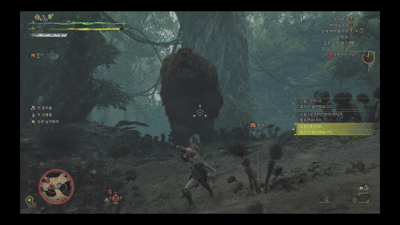
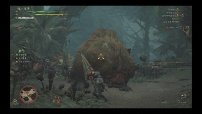

이번작 Monster Hunter Wilds에서는 총 5가지의 신규 전투 액션이 추가되었습니다.

신규 액션
신규액션 목록
집중모드

월드에 존재하던 슬링어 조준 기술을 좀 더 범용적인 기능으로 개선한 와일즈의 신규 기능입니다. 납도상태가 아닌 발도상태에서 사용함으로써 시야 또는 공격의 축을 조준점으로 전환하거나, 납도-조준사격행동을 빠르게 사용할 수 있는 기능입니다.
이를 이용해서 앞으로만 전진하는 공격 연계를 (ㄱ)기억자로 꺾으면서 이동하도록 만들거나, 발도상태에서 슬링어탄이나 와이어 발사를 지연시간 없이 곧바로 출수하게 만드는 등 매우 입체적인 행동을 가능하게 해줍니다.
또한 집중 약점 공격을 발동하기 위해서 필요한 기본 기능입니다.
상처

상처는 어떤 한 신체 부위에 집중 공격을 하면 생기며, 처음에는 가죽이 긁힌 것처럼 보이는 하얀색 흔적이 생깁니다. 이후 이 하얀색 상처에 공격을 누적하면 상처가 점점 벌어져서 붉은색 피를 보이는 "열린" 상태가 됩니다.
열린 상처는 일정량 이상의 공격을 받거나 '집중 약점 공격'에 의해 파괴되며, 이때 소재를 획득하고 추가 피해와 약경직, 집중 약점 공격은 무기별로 특수 모션과 효과까지 발동합니다. 상처가 파괴된 부위는 검은 흉터가 남으며 일정 시간 동안 상처가 발생하지 않다가 초기 상태로 돌아갑니다.
생성 가능한 상처의 수는 각 부위마다 최대치가 존재합니다. 평균적으로 각 부위마다 최대 2개의 상처를 생성할 수 있지만, 상처의 최대 수가 1개인 레 다우의 뒷다리처럼 예외사항들도 있습다. 다만 단차 공격으로 생성할 수 있는 상처는 이 최대치에 영향을 받지 않는다.
특정한 상황에서는 몬스터의 일부 부위가 집중 약점 공격을 발동할 수 있는 취약상태로 잠시 전환되는 경우들이 있습니다. 대개 몬스터가 자신의 특징적인 능력을 이용한 강력한 공격을 사용하면 잠시 일정 부분이 붉게 빛나며 상처와 유사한 상태가 됩니다. 해당 기믹이 발생하는 부위는 도감에서 '약점'이라고 쓰여져 있는 부위로 확인할 수 있습니다.
힘겨루기

몬스터의 공격을 여러 번 가드하면 몬스터와 헌터가 힘 겨루기에 들어가고, 공격 버튼을 연타하여 성공하면 전용 모션과 함께 몬스터에게 대미지와 경직을 준다. 가드 가능한 무기로 가드나 저스트 가드를 성공할 때마다 단차처럼 수치가 축적되는 식으로 발동된다.
힘 겨루기가 진행되는 동안 제법 긴 시간동안 몬스터가 멈춰있게 되는 데다, 몬스터 탑승처럼 몬스터가 받는 대미지가 줄어들지도 않기 때문에 파티원에게 상당한 프리딜 시간을 제공할 수 있다.
상쇄

소울 라이크의 패링과 비슷한 신규 액션으로, 몬스터의 육탄 공격판정에 해당하는 히트박스에 무기의 상쇄 액션을 맞추면 발동됩니다.
브레스 같은 간접적 공격에는 발동하지 않습니다.
통상 첫 1회는 거의 반드시 상쇄가 성공하지만 2회 이후는 여러번 상쇄를 적중시켜 상쇄 누적치를 쌓아야 몬스터의 자세를 무너뜨릴 수 있습니다.
저스트 타이밍

쌍검, 활의 회피 / 가드무기의 가드를 정확한 타이밍에 발동시 무적 판정을 받는 시스템. 저스트 회피의 경우 스테미나를 돌려줍니다. 저스트 가드의 경우 강격한 파생 공격으로 이어갈 수 있습니다.